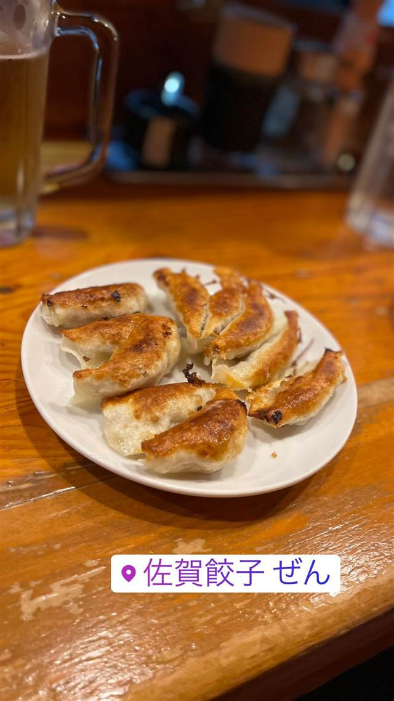

佐賀の餃子専門店 ぜん 溝の口店
佐賀本店から30年、独自製法でパリパリに焼く手作り餃子
佐賀餃子 ぜん
佐賀市で30年前に始まった餃子専門店の系列店。手作りにこだわり、皮も独自製法でパリパリに焼き上げる焼き餃子と水餃子が名物。
TRIVIA
豆知識
- 店主の持論は『餃子は南にいくほど小さくなる』
REVIEWS
世間の評判
3.38食べログ
もちもち餃子とネギダレの評判
- もちっとした食感の餃子を評価する声が多い
- ネギたっぷりのタレとパクチー餃子の香りが人気という声がある
食べログ
| 創業 | 佐賀本店は約30年前、店主の父が創業 |
|---|---|
| 系譜 | 佐賀市の本店からの系列店。溝の口店はその1店舗。 |
| 看板 | 手作り餃子（焼き・水餃子） |
| こだわり | 創業以来すべて手作りで一つ一つ丁寧に包み、皮も独自製法でパリパリに仕上げ、肉汁あふれるジューシーな餡を包む。 |
| どこから | 23区の外れ・近郊 |
| 営業時間 | 月〜金 17:00-22:30 土 16:00-20:30 日 休み |
| 予算 | 昼 ¥2,000～¥2,999 夜 ¥2,000～¥2,999 |
| 定休日 | 日曜・祝日 |
| 予約 | 予約可 |
| 場所 | 溝の口駅 神奈川県川崎市高津区溝口2-3-7 |
| メモ | 店内はかなり狭め。溝の口駅近くの立地。 |
食べたもの：焼き餃子とビール
NEARBY
近い店・同じ系統の店
-
 ★
焼肉 高津
焼肉苑 溝口店
麻布十番から続く焼肉苑グループ、名物テルテルソースの焼テーキ
昼 ¥1,000～¥1,999 夜 ¥3,000～¥3,999
★
焼肉 高津
焼肉苑 溝口店
麻布十番から続く焼肉苑グループ、名物テルテルソースの焼テーキ
昼 ¥1,000～¥1,999 夜 ¥3,000～¥3,999
-
 ピザ 武蔵溝ノ口駅
イタリアンバル CONA コナ 溝の口店
生地から仕込み400℃の窯で焼き上げる自家製ピザ
夜 ¥2,000～¥2,999
ピザ 武蔵溝ノ口駅
イタリアンバル CONA コナ 溝の口店
生地から仕込み400℃の窯で焼き上げる自家製ピザ
夜 ¥2,000～¥2,999
-
 ケーキ・パフェ 溝の口駅／武蔵溝ノ口駅
食べ酔う屋 菜 溝の口店
関西風おでんと刺身盛り合わせが看板の創作和食
夜 ¥3,000～¥3,999
ケーキ・パフェ 溝の口駅／武蔵溝ノ口駅
食べ酔う屋 菜 溝の口店
関西風おでんと刺身盛り合わせが看板の創作和食
夜 ¥3,000～¥3,999
-
 うどん・ほうとう 武蔵溝ノ口駅／溝の口駅
うどんと串揚げ 路じ 本店
じゃがいもと生クリームで仕上げる、白いカレーうどん
昼 ¥1,000～¥1,999 夜 ¥1,000～¥1,999
うどん・ほうとう 武蔵溝ノ口駅／溝の口駅
うどんと串揚げ 路じ 本店
じゃがいもと生クリームで仕上げる、白いカレーうどん
昼 ¥1,000～¥1,999 夜 ¥1,000～¥1,999
-
 とんかつ 津田山駅
とんかつ中華 駒一番
とんかつと中華を一軒で、57年続く食堂の名物は生姜焼き丼
昼 ～¥999 夜 ～¥999
とんかつ 津田山駅
とんかつ中華 駒一番
とんかつと中華を一軒で、57年続く食堂の名物は生姜焼き丼
昼 ～¥999 夜 ～¥999
-
 二郎系(インスパイア) 溝の口
ラーメン泪橋 溝の口店
あしたのジョーが由来のマンモスラーメン、二郎系よりマイルド
昼 ～¥999
二郎系(インスパイア) 溝の口
ラーメン泪橋 溝の口店
あしたのジョーが由来のマンモスラーメン、二郎系よりマイルド
昼 ～¥999